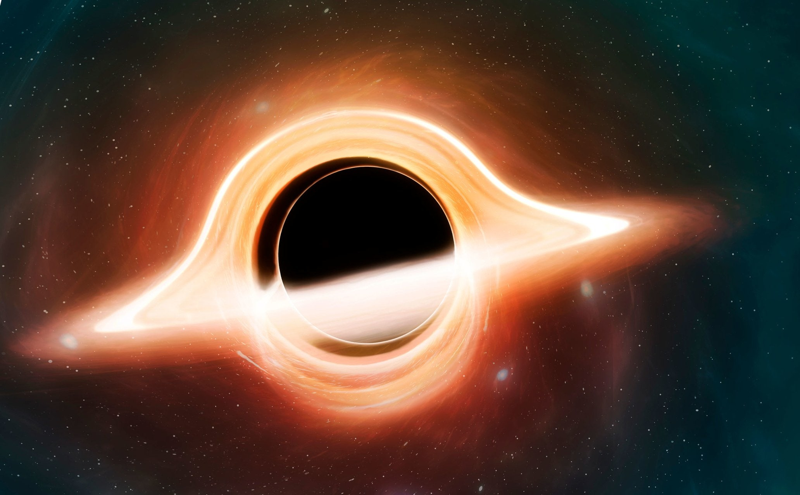
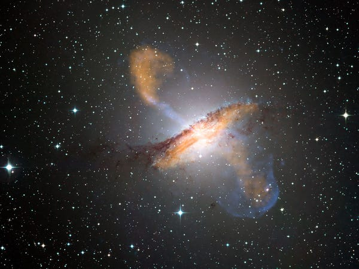
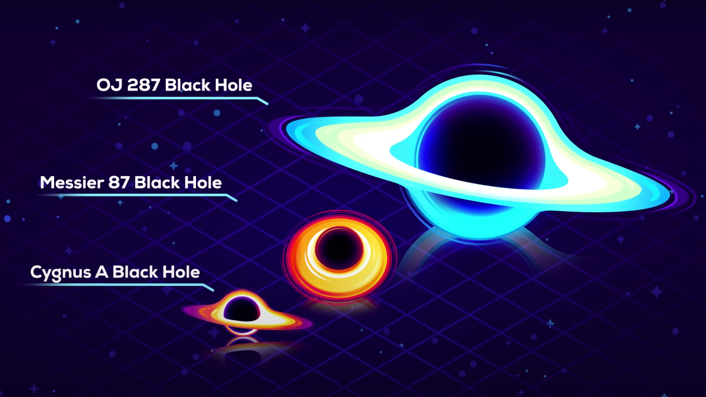

What is a Black Hole?
Don't let the name fool you: a black hole is anything but empty space.
Rather, it is a great amount of matter packed into a very small area -
think of a star ten times more massive than the Sun squeezed into a sphere
approximately the diameter of New York City. The result is a gravitational
field so strong that nothing, not even light, can escape. In recent years,
NASA instruments have painted a new picture of these strange objects that are,
to many, the most fascinating objects in space.
The idea of an object in space so massive and dense that light could not escape
it has been around for centuries. Most famously, black holes were predicted by
Einstein's theory of general relativity, which showed that when a massive star dies,
it leaves behind a small, dense remnant core. If the core's mass is more than about
three times the mass of the Sun, the equations showed, the force of gravity overwhelms
all other forces and produces a black hole.

One Star's End is a Black Hole's Beginning
Most black holes form from the remnants of a large star that dies in a supernova explosion.
(Smaller stars become dense neutron stars, which are not massive enough to trap light.)
If the total mass of the star is large enough (about three times the mass of the Sun),
it can be proven theoretically that no force can keep the star from collapsing under the
influence of gravity. However, as the star collapses, a strange thing occurs. As the surface
of the star nears an imaginary surface called the "event horizon," time on the star slows
relative to the time kept by observers far away. When the surface reaches the event horizon,
time stands still, and the star can collapse no more - it is a frozen collapsing object.

Babies and Giants
Although the basic formation process is understood, one perennial mystery in the science of
black holes is that they appear to exist on two radically different size scales. On the one end,
there are the countless black holes that are the remnants of massive stars. Peppered throughout
the Universe, these "stellar mass" black holes are generally 10 to 24 times as massive as the Sun.
Astronomers spot them when another star draws near enough for some of the matter surrounding it to
be snared by the black hole's gravity, churning out x-rays in the process. Most stellar black holes,
however, are very difficult to detect. Judging from the number of stars large enough to produce such
black holes, however, scientists estimate that there are as many as ten million to a billion such
black holes in the Milky Way alone.
